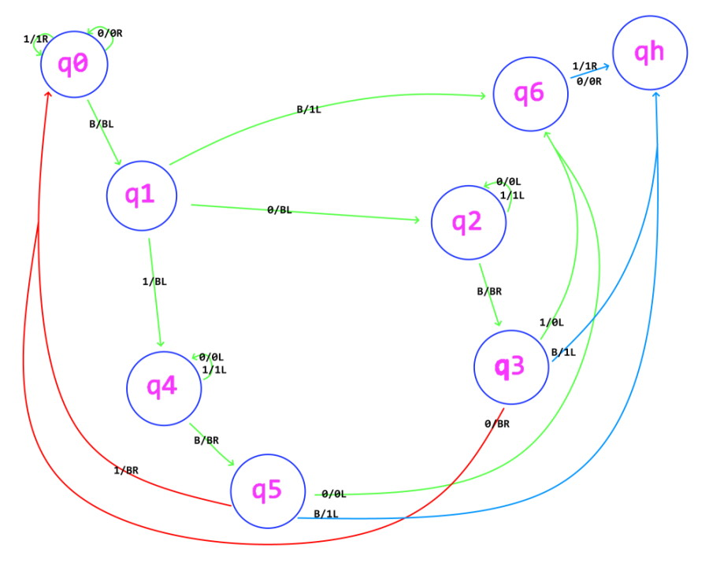
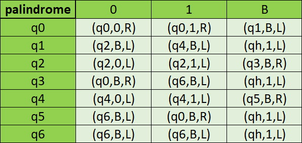

/ Turing /
/ Brainfuck /
Machine de Turing
C’est une chaine infini de data, sur laquelle une caméra est posée qui regarde chaque cellule séparement et selon la valeur dans la cellule, la machine exécute une action.
Elle permet de réaliser tous les calculs de base en utilisant une façon simple de noter :
[ qn , 0 ou 1 , R ou L ] : Dans la case n on regarde si c’est un 0 ou un 1 et on éxécute un déplacement vers la droite ou la gauche si la valeur rentrée est validée.
Vérifier un palindrome :
Sous forme de schéma :
Sous forme de tableau :
Brainf*ck
Le Brainf*ck est un langage de programmation « exotique » qui permet de décrire un algorithme (une machine de Turing) avec seulement 8 instructions. Il suit un modèle de machine simple, consistant en un tableau d’octets initialisés à 0, d’un pointeur sur le tableau (positionné sur le premier octet du tableau) et de deux files d’octets pour les entrées et sorties.
> incrémente (augmente de 1) le pointeur.
< décrémente (diminue de 1) le pointeur.
+ incrémente l’octet du tableau sur lequel est positionné le pointeur (l’octet pointé).
- décrémente l’octet pointé.
. sortie de l’octet pointé (valeur ASCII).
, entrée d’un octet dans le tableau à l’endroit où est positionné le pointeur (valeur ASCII).
[ saute à l’instruction après le ] correspondant si l’octet pointé est à 0.
] retourne à l’instruction après le [ si l’octet pointé est différent de 0.
++++++++++[>+>+++>+++++++>++++++++++<<<<-]>>>>-------------.<-.+++++++.---------.>--------.--.<++.
Signifie "WELCOME"
Vérifier la parité
+[>,]<.
En sortie 0 pair / 1 impair